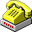

a 19 year old CS sophomore at Ashoka University,
part-time web developer
Nice to meet you!
About Me
Despite starting to code only in Jan 2020, I've found a deep passion for Computer Science.
Within 6 months, I was working with the MERN stack of Web Dev technologies. I love development and I'm always down to learn something new.
I started a playschool at the age of 17 (see The Creche Project), am a polyglot in the making, and have a deep appreciation for really good books.
Currently working on creating an MVP for the company's latest platform that will help connect potential clients to content creators.
Technologies used: Reactjs, Nodejs, JavaScript and other Web Dev tools.
LemonTree Media is a media startup in New York City that focuses on creating interactive media experiences for brands.
Social Media Marketing and R&D Intern | Jul 2020 - Present
Currently working with the Social Media Marketing, Website, and Research and Development teams of this venture.
JobberWacky is a collaborative initiative started by university students from across the world. Our objective is to bring niche vocations into the mainstream and
give people access to the career stories of (off the top of our heads) certifiable saree drapers, chocolate
tasters, bodybuilders, bikers, paragliders and many more.
Head of Marketing | Jun 2020 - Present
Currently working as the Head of Marketing for the Women in Computing Society (WiCS) at Ashoka University, by handling the social media and email outreach for our various events.
Additionally, working with the Events department to find speakers and organising multiple flagship events.
Chief Operations Officer (COO) | May 2019 - Oct 2019
Handled general operations of the organization, started and headed our
global Student Ambassador Program (SAP), managed interns, outreach, partnerships with NGOs, schools, and hospitals, and
marketing.
Liberate is an international organization for people with Obsessive-Compulsive Disorder (OCD) or with troublesome
intrusive thoughts. With an app of the same name (2,000+ downloads), Liberate is an organization led by a
team of talented 15-21 year olds and aims to be a safe space and a resource for anyone with OCD or who may choose to
track their obsessions and compulsions and regulate them.
Founder | Mar 2018 - Present
Led the Ibblur Creche Project in March 2018, where I raised 12,000 USD to start a playschool for the slum children in my
neighbourhood. The creche currently supports around 80 children and their families. In 2019, the creche received donations from the Rotary Club of Delden-Borne Netherlands.
In early 2020, the creche received an additional donation by the chairman of Wipro, Mr. Azim Premji, with plans in place to start many such creches in the next few years.
Featured in The Economic Times,
News Karnataka,
Rotary News, and
DailyHunt.
M&H - An e-commerce site for "high-end fashun" üëóüíª
M&H is an ecommerce platform for "high-end fashun". I tried to model Amazon (but really more like Flipkart) in terms of
basic features. All products and their details have been taken from H&M (hence the name). This is a full stack
application and uses the MERN stack - ReactJS as a frontend framework, Node + Express on the
backend, and MongoDB as a database.
Technologies used: ReactJS, Node, Express, MongoDB, other Web Dev tools like React-Redux, Babel, etc.
Basic Calculator App üì±üíô
This is a Basic Calculator App. The word "basic" is important as it isn't a replacement to the calculator app on most devices. I had come across Flutter
this last month and after installing Android Studio and Flutter, and learning Dart, playing around with Flutter was
really fun.
Technologies used: Android Studio, Dart, Flutter
Moobie - the Movie Finding Web App üé¨üîç
Moobie is a Movie Finding Web App created using the Open Movie Database (OMDb) API. This is a project I made primarily
to understand how APIs work and practice a few other things I already knew.
Technologies used: JavaScript, jQuery
Maurer Rose Visualiser üåπüìê
I have always been intrigued by sprirographs - I distinctly remember drawing every single shape I could with them as a 7
year old and assigning themse shapes unique names and personalities. Many years later, I have come to appreciate the
math behind these beautiful patterns. Rose mathematics will never fail to intrigue me.
Technologies used: JavaScript (Vanilla)
Forkify - A Recipe Finding Web Application. This was the final project as part of a Udemy Course ü•£üç¥
Forkify is a recipe finding web application which uses data from the Forkify API. While it is a fairly basic web
application, it can be used as a guide to cook one's favorite dish. Beyond accessing recipes from different sources
online, it also provides information on the number and amount of ingredients needed to build a specific dish according
to the number of people to serve.
Technologies used: JavaScript (Vanilla), Webpack, Babel, etc.
Welcome to my Website!
Welcome to my Website!
Get in Touch! 
If you're interested in the work I do or you'd like to nice a nice chat, feel free to contact me through any of the means below!
I absolutely love talking to people and I'm sure there's a lot we can learn from each other! Hope to hear from you soon!